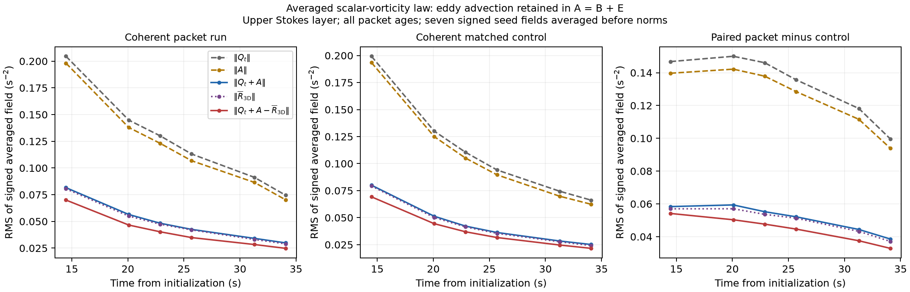
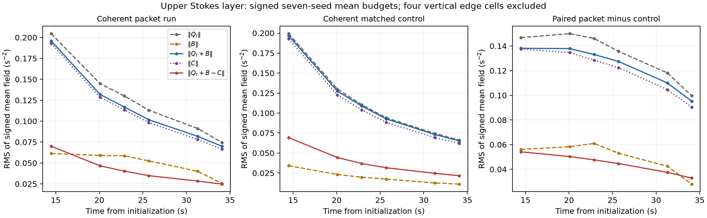

Surface waves & turbulence · Full-field diagnostics
Transverse periodicity makes mean continuity an identity. These measurements test the remaining mean-vorticity equation: Qt + B = C, where B is advection by the mean flow and C retains the net resolved correlations.
Seven matched pairs. The coherent average is formed before nonlinear mean-flow products. Dense saved means provide Qt; the three-dimensional snapshots independently provide C. The unclosed remainder is measured, not assumed to be dissipation.
Periodicity guarantees transverse-mean continuity. It does not set averaged products to zero. The scalar-vorticity test retains A = ⟨u qx + w qz⟩ and measures Qt + A against ⟨R3D⟩. Here A = B + E includes covariance transport. A nonzero Qt + B alone does not refute the scalar-vorticity mechanism: eddy transport can drive the mean current even for two-dimensional realizations.
The signed fields are combined before taking spatial norms. Per-realization transverse averages and the seven-seed coherent average are reported separately. The measured unclosed remainder includes discretization, sampling and omitted model tendencies; it is not identified with dissipation.

Coherent scalar-budget moments · All scalar-budget ratios · Definitions and limitations · Supplement provenance

Coherent term moments · Ratios · Definitions · Methods · Provenance
Spatial and temporal sampling sensitivity is retained in the tables. These checks do not establish simulation convergence or statistical significance.